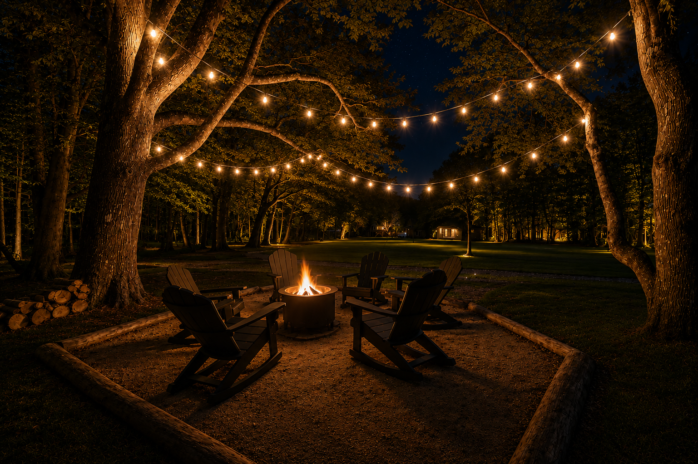

Our story
“We wanted to create a place where couples could escape the busy and demanding hustle of life to relax and reconnect… surrounded by nature and amenities that foster memorable time together.”
— Natalie, Waterfront Retreat
Cherokee, Alabama · Adults only
Three private cabins made for romance, rest, and reconnection on beautiful Pickwick Lake.
A PEACEFUL ESCAPE FOR TWO
Wake beside Pickwick Lake, unwind in your private hot tub, and enjoy uninterrupted time together. Waterfront Retreat was created for couples to slow down, restore their energy, and focus on what matters most—each other.
Our story
“We wanted to create a place where couples could escape the busy and demanding hustle of life to relax and reconnect… surrounded by nature and amenities that foster memorable time together.”
— Natalie, Waterfront Retreat
Three unique retreats
Each cabin welcomes two guests and gives you your own peaceful corner of Pickwick Lake.

Life is better at the lake
No crowds. No noisy hallways. Just birdsong, breezes, open water, and the person you came to enjoy it with.
Beyond your cabin
Morning light on the water, peaceful wildlife, evenings by the fire, and quiet nights beneath the stars.
What guests are saying
“My husband and I stayed in the Eagle’s Nest for my birthday and our wedding anniversary, and it couldn’t have been more perfect. There were s’mores waiting for us and a lock for the lovers’ lock fence — such a thoughtful touch. Incredibly romantic and cozy, and the host was so kind and quick to respond. We’ll absolutely be back!”
“Our weekend at the Blue Heron was exactly the relaxing couples getaway we needed. Everything was thoughtfully designed, right down to a towel warmer. The hot tub and outdoor shower were highlights and made the whole stay feel like a true retreat. Already looking forward to coming back.”
“More than perfect. They had the fire and hot tub ready for us and even had a welcome tray waiting — they even got the heat going in the cabin so I wouldn’t be cold when we arrived. Couldn’t have asked for a better stay. I needed about ten more days out here.”
Getting here
Tucked along a quiet inlet of Pickwick Lake, Waterfront Retreat is easier to reach than you’d think. Exact directions and gate access are sent before your arrival.
Drive times are approximate.
Ready to escape?
See real-time availability for all three cabins and reserve securely through Guesty.
Stay in the loop
Sign up for special offers, last-minute openings, and seasonal deals at Waterfront Retreat.